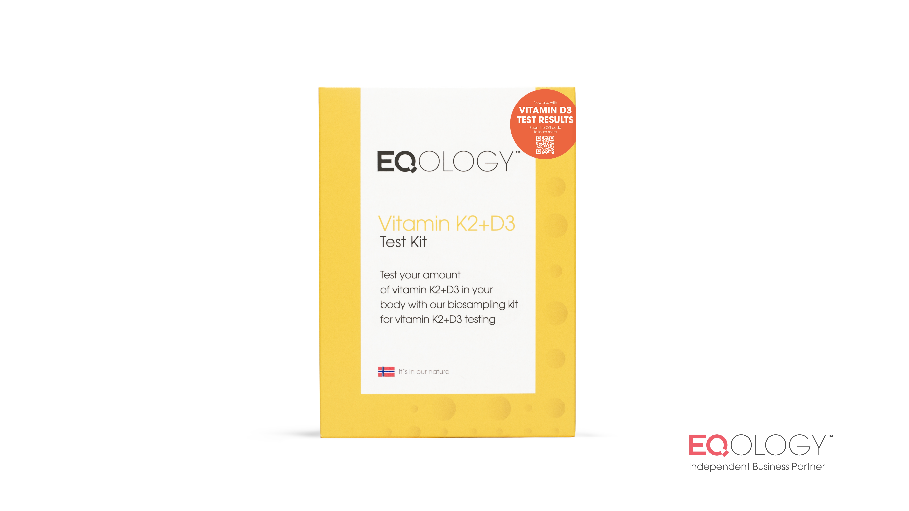

Baue dir ein zweites Einkommen im Gesundheitsbereich auf – ohne Druck und ohne klassischen Hustle.
Ich begleite Menschen dabei, mit Nährstoffkonzepten ein eigenes Standbein aufzubauen – strukturiert und ehrlich.
Kostenloses Erstgespräch
Ich begleite Menschen dabei, mit Nährstoffkonzepten ein eigenes Standbein aufzubauen – strukturiert und ehrlich.
Kostenloses ErstgesprächViele Menschen achten auf ihre Ernährung – und fühlen sich trotzdem nicht in ihrer vollen Energie. Mit gezielten Analysen bekommst du Klarheit: Wo stehst du wirklich?

Entdecke deinen aktuellen Omega-3 Index und optimiere deine Fettsäuren-Balance.

Erhalte einen umfassenden Überblick über deinen Vitaminstatus.

Persönlich abgestimmte Empfehlungen basierend auf deinen Analyseergebnissen.
Ich wollte nie einfach nur arbeiten, um Ziele von anderen zu erfüllen. Ich wollte etwas aufbauen, das Sinn macht.
Heute arbeite ich mit Menschen, die genau das auch wollen:
Mehr Gesundheit. Mehr Selbstbestimmung.
Und die Möglichkeit, sich ein eigenes Einkommen aufzubauen.
Vom Nebeneinkommen bis hin zu einem eigenen Business ist alles möglich – Schritt für Schritt und in deinem Tempo.
Du gehst diesen Weg nicht alleine.
Community
Teil einer wachsenden Community von Menschen, die sich gegenseitig unterstützen
Klares Onboarding
Schritt-für-Schritt-Begleitung von Anfang an
Kein Vorwissen nötig
Nur die Bereitschaft, dich damit zu beschäftigen
Persönliche Begleitung
Individuelle Unterstützung auf deinem Weg
Ich bin David, und ich glaube daran, dass echte Veränderung mit kleinen, bewussten Schritten beginnt. Mein Ziel ist es, Menschen zu helfen, ihre Gesundheit in die eigene Hand zu nehmen und gleichzeitig die Freiheit zu gewinnen, selbstbestimmt zu arbeiten.
Dann lass uns sprechen. In einem kostenlosen Erstgespräch klären wir gemeinsam, ob und wie wir zusammenarbeiten können.
Kostenloses Erstgespräch vereinbaren